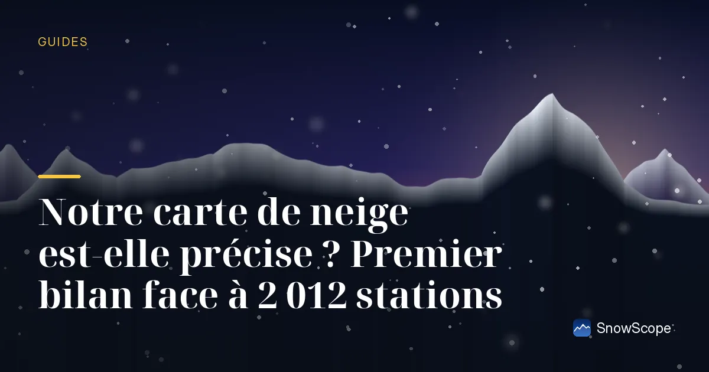

Notre carte de neige est-elle précise ? Premier bilan face à 2 012 stations
Une carte de neige n'aide les skieurs que si les chiffres sont honnêtes. Nous vérifions maintenant la nôtre chaque jour par rapport aux mesures réelles de stations à travers les Alpes, les Pyrénées et l'Amérique du Nord, et nous publions les résultats. Voici le premier score du 9 novembre 2026.
Consultez les prévisions neige en temps réel pour Alps sur l'application SnowScopeHauteurs de neige, alertes poudreuse et carte 3D, gratuitement.
Précision générale : le premier bulletin de notes
Le 9 novembre, SnowScope a comparé sa carte avec 2 012 stations qui ont signalé une profondeur de neige (les données proviennent de 2 516 stations sur 16 réseaux). La carte était en moyenne 0,5 cm trop faible. L'erreur typique était de 7,7 cm, et la carte a correctement montré présence ou absence de neige (5 cm ou plus) 88 % du temps.
Début novembre facilite certaines choses : de nombreuses stations de montagne n'ont pas encore de neige, et la carte est d'accord avec cela. Mais sur 780 stations où soit la station, soit la carte montrait de la neige, l'histoire était plus complexe. L'erreur typique là-bas était de 12,4 cm, la carte étant 1,3 cm trop faible et chaque site variant d'environ 3,3 cm par rapport à la prévision.
Trois régions, trois histoires
L'Ouest américain (1 063 stations SNOTEL et similaires) était le meilleur appariement : un biais de 0,1 cm, une erreur typique de 4,6 cm, 89 % d'accord sur présence ou absence de neige. Les Alpes (917 stations) avaient un biais faible de 1,1 cm et une erreur typique de 10,3 cm, avec 86 % d'accord. Les Pyrénées sont toujours petites : seulement 14 stations qui rapportent pour l'instant, avec une erreur typique de 3,0 cm.
Un site des Alpes fausse les chiffres : un glacier à 3 499 m a mesuré 320 cm tandis que la carte montre 28 cm. Les glaciers conservent la vieille neige et la glace qu'une carte de ski saisonnière devrait ignorer, nous signalons donc de telles anomalies plutôt que d'essayer de les intégrer à la prévision.
Où la carte peine encore
La neige fine en début de saison est difficile. Quand une station mesurait de la neige, la carte a trouvé de la neige seulement 61 % du temps. Quand la carte disait neige, 23 % de ces stations n'en ont rapporté aucune. Quelques centimètres éparpillés sur une pente à 500 m de résolution est le premier problème que nous corrigeons.
Les tempêtes chaudes nous ont aussi surpris cette semaine. Notre carte transformait la pluie en neige quand l'air était trop chaud pour la geler. Le 12 novembre dans les Alpes du Sud à 2 300 m, cette erreur signifiait prévoir 2,7 cm de neige nouvelle quand la réalité était 0,1 cm. La bonne nouvelle : la neige nouvelle sur 24 heures marque déjà bien, avec une erreur typique de seulement 1,0 cm sur 1 890 stations.
Pourquoi ces chiffres importent—et leurs limites
Cette vérification vous dit à quel point la carte finale s'adapte aux mesures, pas un test indépendant. Les mêmes stations aident à construire la carte, c'est donc un contrôle final, pas une prévision en aveugle. Nous planifions un test séparé avec des stations mises de côté.
Une seule station montre un point ; la carte fait la moyenne sur des carrés de grille de 500 m. La neige varie fortement sur quelques centaines de mètres à cause du vent, de l'abri des forêts et de l'exposition au soleil. Cet écart entre point et surface est réel, pas une erreur que nous pouvons corriger. Nous travaillons sur une grille de 100 m pour le réduire, et nous ajouterons une « plage probable » pour que vous sachiez quand la carte est moins certaine.
Ce que vous verrez ensuite
Cette vérification s'exécute maintenant deux fois par jour et conserve un historique, pour que vous voyiez les chiffres changer tout au long de la saison hivernale. Au printemps, vous verrez comment la carte fonctionne sur neige profonde, terrain escarpé et temps changeant.
Bientôt : une carte plus nette à 100 m de résolution, plus de stations en Espagne et Norvège, une règle plus intelligente pour la neige fine et clairsemée aux basses altitudes, et une plage de prévision autour de chaque profondeur pour que vous sachiez à quel point la carte est sûre.
Conseils aux skieurs
- Utilisez la carte pour comparer différentes pentes et altitudes de votre station plutôt que de faire confiance à un seul point. Recoupez avec le bulletin de neige propre de la station avant de partir.
- Activez la couche « Neige mesurée » dans l'app pour voir où se trouvent les stations réelles et comment elles se comparent avec la carte autour de vous.
- En début de saison, croyez d'abord les pentes hautes nord. Attendez-vous à neige fine ou clairsemée plus bas, surtout dans les vallées et sur terrain sud.
À propos de ces chiffres
Les hauteurs de neige des stations sont la neige la plus épaisse sur le haut du domaine à la date indiquée ; ce sont des estimations pour une zone, pas une mesure en un point. Les prévisions peuvent changer. Consultez toujours le bulletin d'avalanche officiel avant le hors-piste.
Citer ce bulletin
Pour la recherche, l'enseignement ou la presse : chiffres et graphiques réutilisables librement sous CC BY 4.0 avec cette citation.
SnowScope (2026), Notre carte de neige est-elle précise ? Premier bilan face à 2 012 stations, https://snowscope.app/blog/fr/2026/11/how-accurate-is-our-snow-depth-map-november-2026.html, consulté le 2026-11-09
SnowScope (Atlas Labs). (2026, November 9). Notre carte de neige est-elle précise ? Premier bilan face à 2 012 stations. SnowScope snow reports. https://snowscope.app/blog/fr/2026/11/how-accurate-is-our-snow-depth-map-november-2026.html
BibTeX
@misc{snowscope2026howaccurateisoursnowdept,
author = {{SnowScope (Atlas Labs)}},
title = {Notre carte de neige est-elle précise ? Premier bilan face à 2 012 stations},
year = {2026},
month = nov,
howpublished = {\url{https://snowscope.app/blog/fr/2026/11/how-accurate-is-our-snow-depth-map-november-2026.html}},
note = {Published 2026-11-09 19:55 UTC; accessed 2026-11-09}
}· CC BY 4.0 · Méthodes, données et outils →
Suivre Alps
Gratuit : un message quand la neige arrive, et la météo chaque matin.
Autres bulletins neige

Prévision Whistler Blackcomb : 74 cm en 72 heures ; les semaines 13, 12, 11 apportent les neiges les plus abondantes de l'année historiquement. Prévision du 5 novembre.

La neige au 3 novembre 2026 : Kendall Mountain 53 in (134 cm) après une tempête, Big White 91 cm, les Alpes jusqu'à 55 cm à Bonneval-sur-Arc.